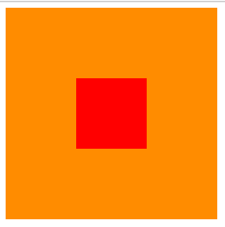
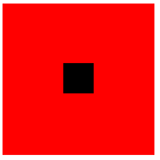
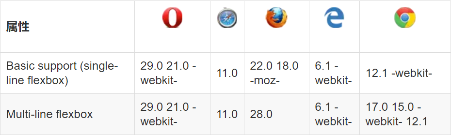
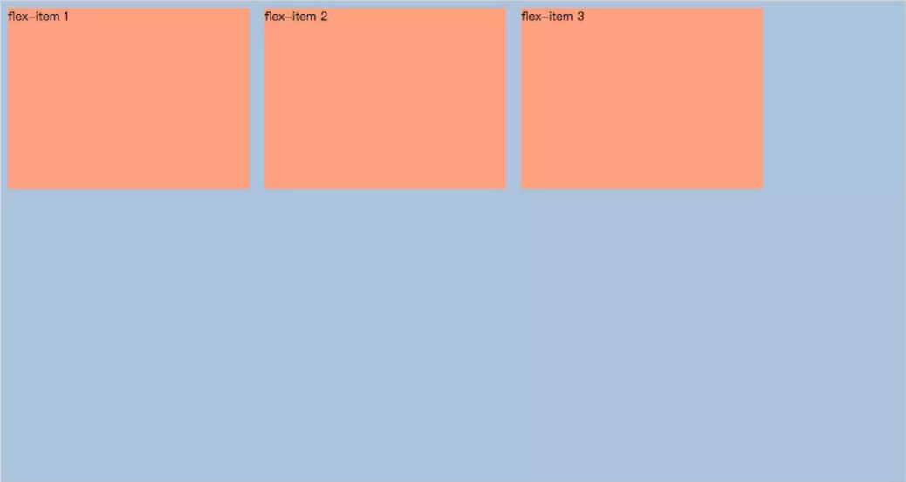

<!DOCTYPE html>
<html>
<head><meta name="generator" content="Hexo 3.8.0">
  <meta charset="utf-8">
  

  
  <title>Tiny-京城小不点儿</title>
  <meta name="viewport" content="width=device-width, initial-scale=1, maximum-scale=1">
  <meta property="og:type" content="website">
<meta property="og:title" content="Tiny-京城小不点儿">
<meta property="og:url" content="http://yoursite.com/index.html">
<meta property="og:site_name" content="Tiny-京城小不点儿">
<meta property="og:locale" content="default">
<meta name="twitter:card" content="summary">
<meta name="twitter:title" content="Tiny-京城小不点儿">
  
    <link rel="alternate" href="/atom.xml" title="Tiny-京城小不点儿" type="application/atom+xml">
  
  
    <link rel="icon" href="/favicon.png">
  
  
    <link href="//fonts.googleapis.com/css?family=Source+Code+Pro" rel="stylesheet" type="text/css">
  
  <link rel="stylesheet" href="/css/style.css">
</head>
</html>
<body>
  <div id="container">
    <div id="wrap">
      <header id="header">
  <div id="banner"></div>
  <div id="header-outer" class="outer">
    <div id="header-title" class="inner">
      <h1 id="logo-wrap">
        <a href="/" id="logo">Tiny-京城小不点儿</a>
      </h1>
      
    </div>
    <div id="header-inner" class="inner">
      <nav id="main-nav">
        <a id="main-nav-toggle" class="nav-icon"></a>
        
          <a class="main-nav-link" href="/">Home</a>
        
          <a class="main-nav-link" href="/archives">Archives</a>
        
      </nav>
      <nav id="sub-nav">
        
          <a id="nav-rss-link" class="nav-icon" href="/atom.xml" title="RSS Feed"></a>
        
        <a id="nav-search-btn" class="nav-icon" title="Search"></a>
      </nav>
      <div id="search-form-wrap">
        <form action="//google.com/search" method="get" accept-charset="UTF-8" class="search-form"><input type="search" name="q" class="search-form-input" placeholder="Search"><button type="submit" class="search-form-submit">&#xF002;</button><input type="hidden" name="sitesearch" value="http://yoursite.com"></form>
      </div>
    </div>
  </div>
</header>
      <div class="outer">
        <section id="main">
  
    <article id="post-node中api下载本地文件" class="article article-type-post" itemscope="" itemprop="blogPost">
  <div class="article-meta">
    <a href="/2018/11/09/node中api下载本地文件/" class="article-date">
  <time datetime="2018-11-09T14:09:26.000Z" itemprop="datePublished">2018-11-09</time>
</a>
    
  </div>
  <div class="article-inner">
    
    
      <header class="article-header">
        
  
    <h1 itemprop="name">
      <a class="article-title" href="/2018/11/09/node中api下载本地文件/">node中api下载本地文件</a>
    </h1>
  

      </header>
    
    <div class="article-entry" itemprop="articleBody">
      
        <p>前两天遇到一个项目，需要下载本地服务器的文件，代码如下</p>
<p>首先： node环境必备的</p>
<p>第二步： 创建项目文件夹</p>
<p>第三步： 打开cmd（window+R 输入cmd回车）</p>
<p>第四步： 输入node命令</p>
<figure class="highlight bash"><table><tr><td class="gutter"><pre><span class="line">1</span><br></pre></td><td class="code"><pre><span class="line">cnpm init</span><br></pre></td></tr></table></figure>
<p>一路回车</p>
<p>第五步： 进入项目文件夹</p>
<figure class="highlight bash"><table><tr><td class="gutter"><pre><span class="line">1</span><br></pre></td><td class="code"><pre><span class="line"><span class="built_in">cd</span> 项目名称</span><br></pre></td></tr></table></figure>
<p>第六步：安装express框架</p>
<figure class="highlight bash"><table><tr><td class="gutter"><pre><span class="line">1</span><br></pre></td><td class="code"><pre><span class="line">npm install express -S</span><br></pre></td></tr></table></figure>
<p>第七步：创建js文件并输入下面代码</p>
<figure class="highlight bash"><table><tr><td class="gutter"><pre><span class="line">1</span><br><span class="line">2</span><br><span class="line">3</span><br><span class="line">4</span><br><span class="line">5</span><br><span class="line">6</span><br><span class="line">7</span><br><span class="line">8</span><br><span class="line">9</span><br><span class="line">10</span><br><span class="line">11</span><br><span class="line">12</span><br><span class="line">13</span><br><span class="line">14</span><br><span class="line">15</span><br><span class="line">16</span><br></pre></td><td class="code"><pre><span class="line">const http = require(<span class="string">'http'</span>);</span><br><span class="line">const express = require(<span class="string">'express'</span>);</span><br><span class="line">const fs=require(<span class="string">"fs"</span>);</span><br><span class="line"></span><br><span class="line">const app = express();</span><br><span class="line">app.get(<span class="string">'/download/product.json'</span>, <span class="keyword">function</span> (req, res, next) &#123;</span><br><span class="line">  <span class="built_in">let</span> path=<span class="string">"G:\\autoreji\\getro-auto-regi\\product.json"</span>;</span><br><span class="line">  <span class="built_in">let</span> fileJson = fs.createReadStream(path);</span><br><span class="line">  res.writeHead(200, &#123;</span><br><span class="line">    <span class="string">'Content-Type'</span>: <span class="string">'application/force-download'</span>,</span><br><span class="line">    <span class="string">'Content-Disposition'</span>: <span class="string">'attachment; filename=product.json'</span></span><br><span class="line">  &#125;);</span><br><span class="line">  fileJson.pipe(res);</span><br><span class="line">&#125;);</span><br><span class="line"></span><br><span class="line">http.createServer(app).listen(3000);</span><br></pre></td></tr></table></figure>
<p>第八步： 运行这个js文件服务器</p>
<figure class="highlight bash"><table><tr><td class="gutter"><pre><span class="line">1</span><br></pre></td><td class="code"><pre><span class="line">node js文件名称==》服务器文件名称</span><br></pre></td></tr></table></figure>

      
    </div>
    <footer class="article-footer">
      <a data-url="http://yoursite.com/2018/11/09/node中api下载本地文件/" data-id="cjoa4cavw0002isnuaa9p84nm" class="article-share-link">Share</a>
      
      
    </footer>
  </div>
  
</article>


  
    <article id="post-css水平垂直居中" class="article article-type-post" itemscope="" itemprop="blogPost">
  <div class="article-meta">
    <a href="/2018/11/09/css水平垂直居中/" class="article-date">
  <time datetime="2018-11-09T13:50:33.000Z" itemprop="datePublished">2018-11-09</time>
</a>
    
  </div>
  <div class="article-inner">
    
    
      <header class="article-header">
        
  
    <h1 itemprop="name">
      <a class="article-title" href="/2018/11/09/css水平垂直居中/">css水平垂直居中</a>
    </h1>
  

      </header>
    
    <div class="article-entry" itemprop="articleBody">
      
        <p>水平垂直居中，总结出四种方法</p>
<h3 id="方案1：position-元素已知宽度"><a href="#方案1：position-元素已知宽度" class="headerlink" title="方案1：position 元素已知宽度"></a>方案1：position 元素已知宽度</h3><hr>


<p>父元素设置为：position: relative;<br>子元素设置为：position: absolute;<br>距上50%，据左50%，然后减去元素自身宽度的距离就可以实现 </p>
<figure class="highlight bash"><table><tr><td class="gutter"><pre><span class="line">1</span><br><span class="line">2</span><br><span class="line">3</span><br><span class="line">4</span><br><span class="line">5</span><br><span class="line">6</span><br><span class="line">7</span><br><span class="line">8</span><br><span class="line">9</span><br><span class="line">10</span><br><span class="line">11</span><br><span class="line">12</span><br><span class="line">13</span><br><span class="line">14</span><br><span class="line">15</span><br><span class="line">16</span><br><span class="line">17</span><br><span class="line">18</span><br><span class="line">19</span><br><span class="line">20</span><br></pre></td><td class="code"><pre><span class="line">&lt;div class=<span class="string">"box"</span>&gt;</span><br><span class="line">    &lt;div class=<span class="string">"content"</span>&gt;</span><br><span class="line">    &lt;/div&gt;</span><br><span class="line">&lt;/div&gt;</span><br><span class="line"></span><br><span class="line">.box &#123;</span><br><span class="line">    background-color: <span class="comment">#FF8C00;</span></span><br><span class="line">    width: 300px;</span><br><span class="line">    height: 300px;</span><br><span class="line">    position: relative;</span><br><span class="line">&#125;</span><br><span class="line">.content &#123;</span><br><span class="line">    background-color: <span class="comment">#F00;</span></span><br><span class="line">    width: 100px;</span><br><span class="line">    height: 100px;</span><br><span class="line">    position: absolute;</span><br><span class="line">    left: 50%;</span><br><span class="line">    top: 50%;</span><br><span class="line">    margin: -50px 0 0 -50px;</span><br><span class="line">&#125;</span><br></pre></td></tr></table></figure>
<p></p>
<h3 id="方案2：position-transform-元素未知宽度"><a href="#方案2：position-transform-元素未知宽度" class="headerlink" title="方案2：position transform 元素未知宽度"></a>方案2：position transform 元素未知宽度</h3><hr>


<p>如果元素未知宽度，只需将上面例子中的margin: -50px 0 0 -50px;替换为：transform: translate(-50%,-50%);<br>效果如上！ </p>
<figure class="highlight bash"><table><tr><td class="gutter"><pre><span class="line">1</span><br><span class="line">2</span><br><span class="line">3</span><br><span class="line">4</span><br><span class="line">5</span><br><span class="line">6</span><br><span class="line">7</span><br><span class="line">8</span><br><span class="line">9</span><br><span class="line">10</span><br><span class="line">11</span><br><span class="line">12</span><br><span class="line">13</span><br><span class="line">14</span><br><span class="line">15</span><br><span class="line">16</span><br><span class="line">17</span><br><span class="line">18</span><br><span class="line">19</span><br><span class="line">20</span><br></pre></td><td class="code"><pre><span class="line">&lt;div class=<span class="string">"box"</span>&gt;</span><br><span class="line">    &lt;div class=<span class="string">"content"</span>&gt;</span><br><span class="line">    &lt;/div&gt;</span><br><span class="line">&lt;/div&gt;</span><br><span class="line"></span><br><span class="line">.box &#123;</span><br><span class="line">    background-color: <span class="comment">#FF8C00;</span></span><br><span class="line">    width: 300px;</span><br><span class="line">    height: 300px;</span><br><span class="line">    position: relative;</span><br><span class="line">&#125;</span><br><span class="line">.content &#123;</span><br><span class="line">    background-color: <span class="comment">#F00;</span></span><br><span class="line">    width: 100px;</span><br><span class="line">    height: 100px;</span><br><span class="line">    position: absolute;</span><br><span class="line">    left: 50%;</span><br><span class="line">    top: 50%;</span><br><span class="line">    transform: translate(-50%,-50%);</span><br><span class="line">&#125;</span><br></pre></td></tr></table></figure>
<p></p>
<h3 id="方案3：flex布局"><a href="#方案3：flex布局" class="headerlink" title="方案3：flex布局"></a>方案3：flex布局</h3><hr>


<figure class="highlight bash"><table><tr><td class="gutter"><pre><span class="line">1</span><br><span class="line">2</span><br><span class="line">3</span><br><span class="line">4</span><br><span class="line">5</span><br><span class="line">6</span><br><span class="line">7</span><br><span class="line">8</span><br><span class="line">9</span><br><span class="line">10</span><br><span class="line">11</span><br><span class="line">12</span><br><span class="line">13</span><br><span class="line">14</span><br><span class="line">15</span><br><span class="line">16</span><br><span class="line">17</span><br><span class="line">18</span><br></pre></td><td class="code"><pre><span class="line">&lt;div class=<span class="string">"box"</span>&gt;</span><br><span class="line">    &lt;div class=<span class="string">"content"</span>&gt;</span><br><span class="line">    &lt;/div&gt;</span><br><span class="line">&lt;/div&gt;</span><br><span class="line"></span><br><span class="line">.box &#123;</span><br><span class="line">    background-color: <span class="comment">#FF8C00;</span></span><br><span class="line">    width: 300px;</span><br><span class="line">    height: 300px;</span><br><span class="line">    display: flex;//flex布局</span><br><span class="line">    justify-content: center;//使子项目水平居中</span><br><span class="line">    align-items: center;//使子项目垂直居中</span><br><span class="line">&#125;</span><br><span class="line">.content &#123;</span><br><span class="line">    background-color: <span class="comment">#F00;</span></span><br><span class="line">    width: 100px;</span><br><span class="line">    height: 100px;</span><br><span class="line">&#125;</span><br></pre></td></tr></table></figure>
<p></p>
<h3 id="方案4：table-cell布局"><a href="#方案4：table-cell布局" class="headerlink" title="方案4：table-cell布局"></a>方案4：table-cell布局</h3><hr>


<p>因为table-cell相当与表格的td，td为行内元素，无法设置宽和高，所以嵌套一层，嵌套一层必须设置display: inline-block;td的背景覆盖了橘黄色，不推荐使用</p>
<figure class="highlight bash"><table><tr><td class="gutter"><pre><span class="line">1</span><br><span class="line">2</span><br><span class="line">3</span><br><span class="line">4</span><br><span class="line">5</span><br><span class="line">6</span><br><span class="line">7</span><br><span class="line">8</span><br><span class="line">9</span><br><span class="line">10</span><br><span class="line">11</span><br><span class="line">12</span><br><span class="line">13</span><br><span class="line">14</span><br><span class="line">15</span><br><span class="line">16</span><br><span class="line">17</span><br><span class="line">18</span><br><span class="line">19</span><br><span class="line">20</span><br><span class="line">21</span><br><span class="line">22</span><br><span class="line">23</span><br><span class="line">24</span><br><span class="line">25</span><br></pre></td><td class="code"><pre><span class="line">&lt;div class=<span class="string">"box"</span>&gt;</span><br><span class="line">    &lt;div class=<span class="string">"content"</span>&gt;</span><br><span class="line">        &lt;div class=<span class="string">"inner"</span>&gt;</span><br><span class="line">        &lt;/div&gt;</span><br><span class="line">    &lt;/div&gt;</span><br><span class="line">&lt;/div&gt;</span><br><span class="line"></span><br><span class="line">.box &#123;</span><br><span class="line">    background-color: <span class="comment">#FF8C00;//橘黄色</span></span><br><span class="line">    width: 300px;</span><br><span class="line">    height: 300px;</span><br><span class="line">    display: table;</span><br><span class="line">&#125;</span><br><span class="line">.content &#123;</span><br><span class="line">    background-color: <span class="comment">#F00;//红色</span></span><br><span class="line">    display: table-cell;</span><br><span class="line">    vertical-align: middle;//使子元素垂直居中</span><br><span class="line">    text-align: center;//使子元素水平居中</span><br><span class="line">&#125;</span><br><span class="line">.inner &#123;</span><br><span class="line">    background-color: <span class="comment">#000;//黑色</span></span><br><span class="line">    display: inline-block;</span><br><span class="line">    width: 20%;</span><br><span class="line">    height: 20%;</span><br><span class="line">&#125;</span><br></pre></td></tr></table></figure>
<p></p>

      
    </div>
    <footer class="article-footer">
      <a data-url="http://yoursite.com/2018/11/09/css水平垂直居中/" data-id="cjoa4cavt0001isnuuiabh4d3" class="article-share-link">Share</a>
      
      
    </footer>
  </div>
  
</article>


  
    <article id="post-flexbox" class="article article-type-post" itemscope="" itemprop="blogPost">
  <div class="article-meta">
    <a href="/2018/11/07/flexbox/" class="article-date">
  <time datetime="2018-11-07T15:16:16.000Z" itemprop="datePublished">2018-11-07</time>
</a>
    
  </div>
  <div class="article-inner">
    
    
      <header class="article-header">
        
  
    <h1 itemprop="name">
      <a class="article-title" href="/2018/11/07/flexbox/">CSS3弹性盒布局方式</a>
    </h1>
  

      </header>
    
    <div class="article-entry" itemprop="articleBody">
      
        <p>学习弹性盒 来自<a href="http://www.ruanyifeng.com/blog/2015/07/flex-grammar.html" target="_blank" rel="noopener">阮一峰老师·Flex布局教程</a></p>
<h1 id="一、CSS3弹性盒子"><a href="#一、CSS3弹性盒子" class="headerlink" title="一、CSS3弹性盒子"></a>一、CSS3弹性盒子</h1><hr>


<h3 id="弹性盒子是CSS3的一种新布局模式。"><a href="#弹性盒子是CSS3的一种新布局模式。" class="headerlink" title="弹性盒子是CSS3的一种新布局模式。"></a>弹性盒子是CSS3的一种新布局模式。</h3><h3 id="CSS3-弹性盒（-Flexible-Box-或-lexbox），是一种当页面需要适应不同的屏幕大小以及设备类型时确保元素拥有恰当的行为的布局方式。"><a href="#CSS3-弹性盒（-Flexible-Box-或-lexbox），是一种当页面需要适应不同的屏幕大小以及设备类型时确保元素拥有恰当的行为的布局方式。" class="headerlink" title="CSS3 弹性盒（ Flexible Box 或 lexbox），是一种当页面需要适应不同的屏幕大小以及设备类型时确保元素拥有恰当的行为的布局方式。"></a>CSS3 弹性盒（ Flexible Box 或 lexbox），是一种当页面需要适应不同的屏幕大小以及设备类型时确保元素拥有恰当的行为的布局方式。</h3><h3 id="引入弹性盒布局模型的目的是提供一种更加有效的方式来对一个容器中的子元素进行排列、对齐和分配空白空间。"><a href="#引入弹性盒布局模型的目的是提供一种更加有效的方式来对一个容器中的子元素进行排列、对齐和分配空白空间。" class="headerlink" title="引入弹性盒布局模型的目的是提供一种更加有效的方式来对一个容器中的子元素进行排列、对齐和分配空白空间。"></a>引入弹性盒布局模型的目的是提供一种更加有效的方式来对一个容器中的子元素进行排列、对齐和分配空白空间。</h3><h1 id="二、浏览器支持"><a href="#二、浏览器支持" class="headerlink" title="二、浏览器支持"></a>二、浏览器支持</h1><hr>


<h3 id="表格中的数字表示支持该属性的第一个浏览器的版本号。"><a href="#表格中的数字表示支持该属性的第一个浏览器的版本号。" class="headerlink" title="表格中的数字表示支持该属性的第一个浏览器的版本号。"></a>表格中的数字表示支持该属性的第一个浏览器的版本号。</h3><h3 id="紧跟在数字后面的-webkit-或-moz-为指定浏览器的前缀。"><a href="#紧跟在数字后面的-webkit-或-moz-为指定浏览器的前缀。" class="headerlink" title="紧跟在数字后面的 -webkit- 或 -moz- 为指定浏览器的前缀。"></a>紧跟在数字后面的 -webkit- 或 -moz- 为指定浏览器的前缀。</h3><p></p>
<h1 id="三、CSS3-弹性盒子内容"><a href="#三、CSS3-弹性盒子内容" class="headerlink" title="三、CSS3 弹性盒子内容"></a>三、CSS3 弹性盒子内容</h1><hr>


<h3 id="弹性盒子由弹性容器-Flex-container-和弹性子元素-Flex-item-组成。"><a href="#弹性盒子由弹性容器-Flex-container-和弹性子元素-Flex-item-组成。" class="headerlink" title="弹性盒子由弹性容器(Flex container)和弹性子元素(Flex item)组成。"></a>弹性盒子由弹性容器(Flex container)和弹性子元素(Flex item)组成。</h3><h3 id="弹性容器通过设置-display-属性的值为-flex-或-inline-flex将其定义为弹性容器。"><a href="#弹性容器通过设置-display-属性的值为-flex-或-inline-flex将其定义为弹性容器。" class="headerlink" title="弹性容器通过设置 display 属性的值为 flex 或 inline-flex将其定义为弹性容器。"></a>弹性容器通过设置 display 属性的值为 flex 或 inline-flex将其定义为弹性容器。</h3><h3 id="弹性容器内包含了一个或多个弹性子元素。"><a href="#弹性容器内包含了一个或多个弹性子元素。" class="headerlink" title="弹性容器内包含了一个或多个弹性子元素。"></a>弹性容器内包含了一个或多个弹性子元素。</h3><h3 id="注意：-弹性容器外及弹性子元素内是正常渲染的。弹性盒子只定义了弹性子元素如何在弹性容器内布局。"><a href="#注意：-弹性容器外及弹性子元素内是正常渲染的。弹性盒子只定义了弹性子元素如何在弹性容器内布局。" class="headerlink" title="注意： 弹性容器外及弹性子元素内是正常渲染的。弹性盒子只定义了弹性子元素如何在弹性容器内布局。"></a>注意： 弹性容器外及弹性子元素内是正常渲染的。弹性盒子只定义了弹性子元素如何在弹性容器内布局。</h3><h3 id="弹性子元素通常在弹性盒子内一行显示。默认情况每个容器只有一行。"><a href="#弹性子元素通常在弹性盒子内一行显示。默认情况每个容器只有一行。" class="headerlink" title="弹性子元素通常在弹性盒子内一行显示。默认情况每个容器只有一行。"></a>弹性子元素通常在弹性盒子内一行显示。默认情况每个容器只有一行。</h3><h3 id="以下元素展示了弹性子元素在一行内显示，从左到右"><a href="#以下元素展示了弹性子元素在一行内显示，从左到右" class="headerlink" title="以下元素展示了弹性子元素在一行内显示，从左到右:"></a>以下元素展示了弹性子元素在一行内显示，从左到右:</h3><figure class="highlight bash"><table><tr><td class="gutter"><pre><span class="line">1</span><br><span class="line">2</span><br><span class="line">3</span><br><span class="line">4</span><br><span class="line">5</span><br><span class="line">6</span><br><span class="line">7</span><br><span class="line">8</span><br><span class="line">9</span><br><span class="line">10</span><br><span class="line">11</span><br><span class="line">12</span><br><span class="line">13</span><br><span class="line">14</span><br><span class="line">15</span><br><span class="line">16</span><br><span class="line">17</span><br><span class="line">18</span><br><span class="line">19</span><br><span class="line">20</span><br><span class="line">21</span><br><span class="line">22</span><br><span class="line">23</span><br><span class="line">24</span><br><span class="line">25</span><br><span class="line">26</span><br><span class="line">27</span><br><span class="line">28</span><br><span class="line">29</span><br><span class="line">30</span><br><span class="line">31</span><br><span class="line">32</span><br></pre></td><td class="code"><pre><span class="line">&lt;!DOCTYPE html&gt;</span><br><span class="line">&lt;html lang=<span class="string">"en"</span>&gt;</span><br><span class="line">&lt;head&gt;</span><br><span class="line">    &lt;meta charset=<span class="string">"UTF-8"</span>&gt;</span><br><span class="line">    &lt;meta name=<span class="string">"viewport"</span> content=<span class="string">"width=device-width, initial-scale=1.0"</span>&gt;</span><br><span class="line">    &lt;meta http-equiv=<span class="string">"X-UA-Compatible"</span> content=<span class="string">"ie=edge"</span>&gt;</span><br><span class="line">    &lt;title&gt;FLEX&lt;/title&gt;</span><br><span class="line">    &lt;style&gt;</span><br><span class="line">        .flex-container &#123;</span><br><span class="line">            display: flex;</span><br><span class="line">            flex-direction: row;</span><br><span class="line">            flex-wrap: wrap;</span><br><span class="line">            width: 1200px;</span><br><span class="line">            height: 640px;</span><br><span class="line">            background-color: lightsteelblue;</span><br><span class="line">        &#125;</span><br><span class="line">        .flex-container .flex-item &#123;</span><br><span class="line">            width: 320px;</span><br><span class="line">            height: 240px;</span><br><span class="line">            margin: 10px;</span><br><span class="line">            background-color:lightsalmon;</span><br><span class="line">        &#125;</span><br><span class="line">    &lt;/style&gt;</span><br><span class="line">&lt;/head&gt;</span><br><span class="line">&lt;body&gt;</span><br><span class="line">    &lt;div class=<span class="string">"flex-container"</span>&gt;</span><br><span class="line">        &lt;div class=<span class="string">"flex-item"</span>&gt;&lt;/div&gt;</span><br><span class="line">        &lt;div class=<span class="string">"flex-item"</span>&gt;&lt;/div&gt;</span><br><span class="line">        &lt;div class=<span class="string">"flex-item"</span>&gt;&lt;/div&gt;</span><br><span class="line">    &lt;/div&gt;</span><br><span class="line">&lt;/body&gt;</span><br><span class="line">&lt;/html&gt;</span><br></pre></td></tr></table></figure>
<p></p>
<h1 id="四、Flex-布局是什么？"><a href="#四、Flex-布局是什么？" class="headerlink" title="四、Flex 布局是什么？"></a>四、Flex 布局是什么？</h1><hr>


<h3 id="Flex-是-Flexible-Box-的缩写，意为”弹性布局”，用来为盒状模型提供最大的灵活性。"><a href="#Flex-是-Flexible-Box-的缩写，意为”弹性布局”，用来为盒状模型提供最大的灵活性。" class="headerlink" title="Flex 是 Flexible Box 的缩写，意为”弹性布局”，用来为盒状模型提供最大的灵活性。"></a>Flex 是 Flexible Box 的缩写，意为”弹性布局”，用来为盒状模型提供最大的灵活性。</h3><h3 id="任何一个容器都可以指定为-Flex-布局。"><a href="#任何一个容器都可以指定为-Flex-布局。" class="headerlink" title="任何一个容器都可以指定为 Flex 布局。"></a>任何一个容器都可以指定为 Flex 布局。</h3><figure class="highlight bash"><table><tr><td class="gutter"><pre><span class="line">1</span><br><span class="line">2</span><br><span class="line">3</span><br></pre></td><td class="code"><pre><span class="line">.box&#123;</span><br><span class="line">  display: flex;</span><br><span class="line">&#125;</span><br></pre></td></tr></table></figure>
<h3 id="行内元素也可以使用-Flex-布局。"><a href="#行内元素也可以使用-Flex-布局。" class="headerlink" title="行内元素也可以使用 Flex 布局。"></a>行内元素也可以使用 Flex 布局。</h3><figure class="highlight bash"><table><tr><td class="gutter"><pre><span class="line">1</span><br><span class="line">2</span><br><span class="line">3</span><br></pre></td><td class="code"><pre><span class="line">.box&#123;</span><br><span class="line">  display: inline-flex;</span><br><span class="line">&#125;</span><br></pre></td></tr></table></figure>
<h3 id="Webkit-内核的浏览器，必须加上-webkit前缀。"><a href="#Webkit-内核的浏览器，必须加上-webkit前缀。" class="headerlink" title="Webkit 内核的浏览器，必须加上-webkit前缀。"></a>Webkit 内核的浏览器，必须加上-webkit前缀。</h3><figure class="highlight bash"><table><tr><td class="gutter"><pre><span class="line">1</span><br><span class="line">2</span><br><span class="line">3</span><br><span class="line">4</span><br></pre></td><td class="code"><pre><span class="line">.box&#123;</span><br><span class="line">  display: -webkit-flex; /* Safari */</span><br><span class="line">  display: flex;</span><br><span class="line">&#125;</span><br></pre></td></tr></table></figure>
<h3 id="注意，设为-Flex-布局以后，子元素的float、clear和vertical-align属性将失效。"><a href="#注意，设为-Flex-布局以后，子元素的float、clear和vertical-align属性将失效。" class="headerlink" title="注意，设为 Flex 布局以后，子元素的float、clear和vertical-align属性将失效。"></a>注意，设为 Flex 布局以后，子元素的float、clear和vertical-align属性将失效。</h3><h2 id="五、基本概念"><a href="#五、基本概念" class="headerlink" title="五、基本概念"></a>五、基本概念</h2><hr>

<h3 id="采用-Flex-布局的元素，称为-Flex-容器（flex-container），简称”容器”。它的所有子元素自动成为容器成员，称为-Flex-项目（flex-item），简称”项目”。"><a href="#采用-Flex-布局的元素，称为-Flex-容器（flex-container），简称”容器”。它的所有子元素自动成为容器成员，称为-Flex-项目（flex-item），简称”项目”。" class="headerlink" title="采用 Flex 布局的元素，称为 Flex 容器（flex container），简称”容器”。它的所有子元素自动成为容器成员，称为 Flex 项目（flex item），简称”项目”。"></a>采用 Flex 布局的元素，称为 Flex 容器（flex container），简称”容器”。它的所有子元素自动成为容器成员，称为 Flex 项目（flex item），简称”项目”。</h3><p></p>
<h3 id="容器默认存在两根轴：水平的主轴（main-axis）和垂直的交叉轴（cross-axis）。主轴的开始位置（与边框的交叉点）叫做main-start，结束位置叫做main-end；交叉轴的开始位置叫做cross-start，结束位置叫做cross-end。"><a href="#容器默认存在两根轴：水平的主轴（main-axis）和垂直的交叉轴（cross-axis）。主轴的开始位置（与边框的交叉点）叫做main-start，结束位置叫做main-end；交叉轴的开始位置叫做cross-start，结束位置叫做cross-end。" class="headerlink" title="容器默认存在两根轴：水平的主轴（main axis）和垂直的交叉轴（cross axis）。主轴的开始位置（与边框的交叉点）叫做main start，结束位置叫做main end；交叉轴的开始位置叫做cross start，结束位置叫做cross end。"></a>容器默认存在两根轴：水平的主轴（main axis）和垂直的交叉轴（cross axis）。主轴的开始位置（与边框的交叉点）叫做main start，结束位置叫做main end；交叉轴的开始位置叫做cross start，结束位置叫做cross end。</h3><h3 id="项目默认沿主轴排列。单个项目占据的主轴空间叫做main-size，占据的交叉轴空间叫做cross-size。"><a href="#项目默认沿主轴排列。单个项目占据的主轴空间叫做main-size，占据的交叉轴空间叫做cross-size。" class="headerlink" title="项目默认沿主轴排列。单个项目占据的主轴空间叫做main size，占据的交叉轴空间叫做cross size。"></a>项目默认沿主轴排列。单个项目占据的主轴空间叫做main size，占据的交叉轴空间叫做cross size。</h3><h2 id="六、容器的属性"><a href="#六、容器的属性" class="headerlink" title="六、容器的属性"></a>六、容器的属性</h2><hr>

<h3 id="以下6个属性设置在容器上。"><a href="#以下6个属性设置在容器上。" class="headerlink" title="以下6个属性设置在容器上。"></a>以下6个属性设置在容器上。</h3><figure class="highlight bash"><table><tr><td class="gutter"><pre><span class="line">1</span><br><span class="line">2</span><br><span class="line">3</span><br><span class="line">4</span><br><span class="line">5</span><br><span class="line">6</span><br></pre></td><td class="code"><pre><span class="line">1、flex-direction</span><br><span class="line">2、flex-wrap</span><br><span class="line">3、flex-flow</span><br><span class="line">4、justify-content</span><br><span class="line">5、align-items</span><br><span class="line">6、align-content</span><br></pre></td></tr></table></figure>
<h3 id="6-1-flex-direction属性"><a href="#6-1-flex-direction属性" class="headerlink" title="6.1 flex-direction属性"></a>6.1 flex-direction属性</h3><hr>

<h3 id="flex-direction属性决定主轴的方向（即项目的排列方向）。"><a href="#flex-direction属性决定主轴的方向（即项目的排列方向）。" class="headerlink" title="flex-direction属性决定主轴的方向（即项目的排列方向）。"></a>flex-direction属性决定主轴的方向（即项目的排列方向）。</h3><figure class="highlight bash"><table><tr><td class="gutter"><pre><span class="line">1</span><br><span class="line">2</span><br><span class="line">3</span><br></pre></td><td class="code"><pre><span class="line">.box &#123;</span><br><span class="line">  flex-direction: row | row-reverse | column | column-reverse;</span><br><span class="line">&#125;</span><br></pre></td></tr></table></figure>
<p></p>
<p>它可能有4个值。</p>
<figure class="highlight bash"><table><tr><td class="gutter"><pre><span class="line">1</span><br><span class="line">2</span><br><span class="line">3</span><br><span class="line">4</span><br></pre></td><td class="code"><pre><span class="line">1、row（默认值）：主轴为水平方向，起点在左端。</span><br><span class="line">2、row-reverse：主轴为水平方向，起点在右端。</span><br><span class="line">3、column：主轴为垂直方向，起点在上沿。</span><br><span class="line">4、column-reverse：主轴为垂直方向，起点在下沿。</span><br></pre></td></tr></table></figure>
<h3 id="6-2-flex-wrap属性"><a href="#6-2-flex-wrap属性" class="headerlink" title="6.2 flex-wrap属性"></a>6.2 flex-wrap属性</h3><hr>

<p>默认情况下，项目都排在一条线（又称”轴线”）上。flex-wrap属性定义，如果一条轴线排不下，如何换行。</p>
<p></p>
<figure class="highlight bash"><table><tr><td class="gutter"><pre><span class="line">1</span><br><span class="line">2</span><br><span class="line">3</span><br></pre></td><td class="code"><pre><span class="line">.box&#123;</span><br><span class="line">  flex-wrap: nowrap | wrap | wrap-reverse;</span><br><span class="line">&#125;</span><br></pre></td></tr></table></figure>
<p>它可能取三个值。</p>
<p>（1）nowrap（默认）：不换行。</p>
<p></p>
<p>（2）wrap：换行，第一行在上方。</p>
<p></p>
<p>（3）wrap-reverse：换行，第一行在下方。</p>
<p></p>
<h3 id="6-3-flex-flow"><a href="#6-3-flex-flow" class="headerlink" title="6.3 flex-flow"></a>6.3 flex-flow</h3><hr>

<p>justify-content属性定义了项目在主轴上的对齐方式。</p>
<figure class="highlight bash"><table><tr><td class="gutter"><pre><span class="line">1</span><br><span class="line">2</span><br><span class="line">3</span><br></pre></td><td class="code"><pre><span class="line">.box &#123;</span><br><span class="line">  justify-content: flex-start | flex-end | center | space-between | space-around;</span><br><span class="line">&#125;</span><br></pre></td></tr></table></figure>
<p></p>
<p>它可能取5个值，具体对齐方式与轴的方向有关。下面假设主轴为从左到右。</p>
<figure class="highlight bash"><table><tr><td class="gutter"><pre><span class="line">1</span><br><span class="line">2</span><br><span class="line">3</span><br><span class="line">4</span><br><span class="line">5</span><br></pre></td><td class="code"><pre><span class="line">1、flex-start（默认值）：左对齐</span><br><span class="line">2、flex-end：右对齐</span><br><span class="line">3、center： 居中</span><br><span class="line">4、space-between：两端对齐，项目之间的间隔都相等。</span><br><span class="line">5、space-around：每个项目两侧的间隔相等。所以，项目之间的间隔比项目与边框的间隔大一倍。</span><br></pre></td></tr></table></figure>
<h3 id="6-5-align-items属性"><a href="#6-5-align-items属性" class="headerlink" title="6.5 align-items属性"></a>6.5 align-items属性</h3><hr>

<p>align-items属性定义项目在交叉轴上如何对齐。</p>
<figure class="highlight bash"><table><tr><td class="gutter"><pre><span class="line">1</span><br><span class="line">2</span><br><span class="line">3</span><br></pre></td><td class="code"><pre><span class="line">.box &#123;</span><br><span class="line">  align-items: flex-start | flex-end | center | baseline | stretch;</span><br><span class="line">&#125;</span><br></pre></td></tr></table></figure>
<p></p>
<p>它可能取5个值。具体的对齐方式与交叉轴的方向有关，下面假设交叉轴从上到下。</p>
<figure class="highlight bash"><table><tr><td class="gutter"><pre><span class="line">1</span><br><span class="line">2</span><br><span class="line">3</span><br><span class="line">4</span><br><span class="line">5</span><br></pre></td><td class="code"><pre><span class="line">1、flex-start：交叉轴的起点对齐。</span><br><span class="line">2、flex-end：交叉轴的终点对齐。</span><br><span class="line">3、center：交叉轴的中点对齐。</span><br><span class="line">4、baseline: 项目的第一行文字的基线对齐。</span><br><span class="line">5、stretch（默认值）：如果项目未设置高度或设为auto，将占满整个容器的高度。</span><br></pre></td></tr></table></figure>
<h3 id="6-6-align-content属性"><a href="#6-6-align-content属性" class="headerlink" title="6.6 align-content属性"></a>6.6 align-content属性</h3><hr>

<p>align-content属性定义了多根轴线的对齐方式。如果项目只有一根轴线，该属性不起作用。</p>
<figure class="highlight bash"><table><tr><td class="gutter"><pre><span class="line">1</span><br><span class="line">2</span><br><span class="line">3</span><br></pre></td><td class="code"><pre><span class="line">.box &#123;</span><br><span class="line">  align-content: flex-start | flex-end | center | space-between | space-around | stretch;</span><br><span class="line">&#125;</span><br></pre></td></tr></table></figure>
<p></p>
<p>该属性可能取6个值</p>
<figure class="highlight bash"><table><tr><td class="gutter"><pre><span class="line">1</span><br><span class="line">2</span><br><span class="line">3</span><br><span class="line">4</span><br><span class="line">5</span><br><span class="line">6</span><br></pre></td><td class="code"><pre><span class="line">1、flex-start：与交叉轴的起点对齐。</span><br><span class="line">2、flex-end：与交叉轴的终点对齐。</span><br><span class="line">3、center：与交叉轴的中点对齐。</span><br><span class="line">4、space-between：与交叉轴两端对齐，轴线之间的间隔平均分布。</span><br><span class="line">5、space-around：每根轴线两侧的间隔都相等。所以，轴线之间的间隔比轴线与边框的间隔大一倍。</span><br><span class="line">6、stretch（默认值）：轴线占满整个交叉轴。</span><br></pre></td></tr></table></figure>
<h2 id="七、项目的属性"><a href="#七、项目的属性" class="headerlink" title="七、项目的属性"></a>七、项目的属性</h2><hr>

<p>以下6个属性设置在项目上。</p>
<figure class="highlight bash"><table><tr><td class="gutter"><pre><span class="line">1</span><br><span class="line">2</span><br><span class="line">3</span><br><span class="line">4</span><br><span class="line">5</span><br><span class="line">6</span><br></pre></td><td class="code"><pre><span class="line">1、order</span><br><span class="line">2、flex-grow</span><br><span class="line">3、flex-shrink</span><br><span class="line">4、flex-basis</span><br><span class="line">5、flex</span><br><span class="line">6、align-self</span><br></pre></td></tr></table></figure>
<h3 id="7-1-order属性"><a href="#7-1-order属性" class="headerlink" title="7.1 order属性"></a>7.1 order属性</h3><hr>

<p>order属性定义项目的排列顺序。数值越小，排列越靠前，默认为0。</p>
<figure class="highlight bash"><table><tr><td class="gutter"><pre><span class="line">1</span><br><span class="line">2</span><br><span class="line">3</span><br></pre></td><td class="code"><pre><span class="line">.item &#123;</span><br><span class="line">  order: &lt;<span class="built_in">integer</span>&gt;;</span><br><span class="line">&#125;</span><br></pre></td></tr></table></figure>
<p></p>
<h3 id="7-2-flex-grow属性"><a href="#7-2-flex-grow属性" class="headerlink" title="7.2 flex-grow属性"></a>7.2 flex-grow属性</h3><hr>

<p>flex-grow属性定义项目的放大比例，默认为0，即如果存在剩余空间，也不放大。</p>
<figure class="highlight bash"><table><tr><td class="gutter"><pre><span class="line">1</span><br><span class="line">2</span><br><span class="line">3</span><br></pre></td><td class="code"><pre><span class="line">.item &#123;</span><br><span class="line">  flex-grow: &lt;number&gt;; /* default 0 */</span><br><span class="line">&#125;</span><br></pre></td></tr></table></figure>
<p></p>
<p>如果所有项目的flex-grow属性都为1，则它们将等分剩余空间（如果有的话）。如果一个项目的flex-grow属性为2，其他项目都为1，则前者占据的剩余空间将比其他项多一倍。</p>
<h3 id="7-3-flex-shrink属性"><a href="#7-3-flex-shrink属性" class="headerlink" title="7.3 flex-shrink属性"></a>7.3 flex-shrink属性</h3><p>flex-shrink属性定义了项目的缩小比例，默认为1，即如果空间不足，该项目将缩小。</p>
<figure class="highlight bash"><table><tr><td class="gutter"><pre><span class="line">1</span><br></pre></td><td class="code"><pre><span class="line">flex-shrink属性定义了项目的缩小比例，默认为1，即如果空间不足，该项目将缩小。</span><br></pre></td></tr></table></figure>
<p></p>
<p>如果所有项目的flex-shrink属性都为1，当空间不足时，都将等比例缩小。如果一个项目的flex-shrink属性为0，其他项目都为1，则空间不足时，前者不缩小。</p>
<p>负值对该属性无效。</p>
<h3 id="7-4-flex-basis属性"><a href="#7-4-flex-basis属性" class="headerlink" title="7.4 flex-basis属性"></a>7.4 flex-basis属性</h3><hr>

<p>flex-basis属性定义了在分配多余空间之前，项目占据的主轴空间（main size）。浏览器根据这个属性，计算主轴是否有多余空间。它的默认值为auto，即项目的本来大小。</p>
<figure class="highlight bash"><table><tr><td class="gutter"><pre><span class="line">1</span><br><span class="line">2</span><br><span class="line">3</span><br></pre></td><td class="code"><pre><span class="line">.item &#123;</span><br><span class="line">  flex-basis: &lt;length&gt; | auto; /* default auto */</span><br><span class="line">&#125;</span><br></pre></td></tr></table></figure>
<p>它可以设为跟width或height属性一样的值（比如350px），则项目将占据固定空间。</p>
<h3 id="7-5-flex属性"><a href="#7-5-flex属性" class="headerlink" title="7.5 flex属性"></a>7.5 flex属性</h3><p>flex属性是flex-grow, flex-shrink 和 flex-basis的简写，默认值为0 1 auto。后两个属性可选。</p>
<figure class="highlight bash"><table><tr><td class="gutter"><pre><span class="line">1</span><br><span class="line">2</span><br><span class="line">3</span><br></pre></td><td class="code"><pre><span class="line">.item &#123;</span><br><span class="line">  flex: none | [ &lt;<span class="string">'flex-grow'</span>&gt; &lt;<span class="string">'flex-shrink'</span>&gt;? || &lt;<span class="string">'flex-basis'</span>&gt; ]</span><br><span class="line">&#125;</span><br></pre></td></tr></table></figure>
<p>该属性有两个快捷值：auto (1 1 auto) 和 none (0 0 auto)。</p>
<p>建议优先使用这个属性，而不是单独写三个分离的属性，因为浏览器会推算相关值。</p>
<h3 id="7-6-align-self属性"><a href="#7-6-align-self属性" class="headerlink" title="7.6 align-self属性"></a>7.6 align-self属性</h3><hr>

<p>align-self属性允许单个项目有与其他项目不一样的对齐方式，可覆盖align-items属性。默认值为auto，表示继承父元素的align-items属性，如果没有父元素，则等同于stretch。</p>
<figure class="highlight bash"><table><tr><td class="gutter"><pre><span class="line">1</span><br><span class="line">2</span><br><span class="line">3</span><br></pre></td><td class="code"><pre><span class="line">.item &#123;</span><br><span class="line">  align-self: auto | flex-start | flex-end | center | baseline | stretch;</span><br><span class="line">&#125;</span><br></pre></td></tr></table></figure>
<p></p>
<p>该属性可能取6个值，除了auto，其他都与align-items属性完全一致。</p>

      
    </div>
    <footer class="article-footer">
      <a data-url="http://yoursite.com/2018/11/07/flexbox/" data-id="cjoa4cavz0004isnuh6lcmh8m" class="article-share-link">Share</a>
      
      
    </footer>
  </div>
  
</article>


  
    <article id="post-videoStyle" class="article article-type-post" itemscope="" itemprop="blogPost">
  <div class="article-meta">
    <a href="/2018/11/07/videoStyle/" class="article-date">
  <time datetime="2018-11-07T15:07:10.000Z" itemprop="datePublished">2018-11-07</time>
</a>
    
  </div>
  <div class="article-inner">
    
    
      <header class="article-header">
        
  
    <h1 itemprop="name">
      <a class="article-title" href="/2018/11/07/videoStyle/">video属性</a>
    </h1>
  

      </header>
    
    <div class="article-entry" itemprop="articleBody">
      
        <p>今天遇到了一个关于video标签中调亮度的问题，查了好半天，终于找到了<a href="https://codepen.io/ygjack/pen/xrqQjR" target="_blank" rel="noopener">一个案例</a></p>
<h2 id="在video标签里加上style，或者写class"><a href="#在video标签里加上style，或者写class" class="headerlink" title="在video标签里加上style，或者写class"></a>在video标签里加上style，或者写class</h2><figure class="highlight bash"><table><tr><td class="gutter"><pre><span class="line">1</span><br><span class="line">2</span><br><span class="line">3</span><br><span class="line">4</span><br></pre></td><td class="code"><pre><span class="line">&lt;video id=<span class="string">"video"</span> width=<span class="string">"640"</span> height=<span class="string">"480"</span> preload=<span class="string">"auto"</span> controls=<span class="string">""</span> loop=<span class="string">""</span> autoplay=<span class="string">""</span> style=<span class="string">"filter: blur(0px) saturate(1) hue-rotate(0deg) brightness(0.9) contrast(1) invert(0) sepia(0);"</span>&gt;</span><br><span class="line">   &lt;<span class="built_in">source</span> src=<span class="string">"http://116.211.93.149/vkp.tc.qq.com/r0023hb5s6k.mp4?vkey=C20D20F6982F172D47405A2AD5AAFDF8E45DAF2E915F7E69DA0F48C9A90BC355E0D4C38C09EF5DF5729E8727064C7F547EC30DC9C768D731099F5033C998DDDCDB6D3A42813168C97D7E7E72BED220D3150BF640872580F1&amp;amp;br=72&amp;amp;platform=2&amp;amp;fmt=auto&amp;amp;level=0&amp;amp;sdtfrom=v3010&amp;amp;guid=c1061b2b22bd44e4c6ce66966df9a927&amp;amp;locid=5938d864-3576-4298-9a0f-8122fe0c3ee4&amp;amp;size=5211947&amp;amp;ocid=655365548"</span> <span class="built_in">type</span>=<span class="string">"video/mp4"</span>&gt;</span><br><span class="line">   Your not cool and I won<span class="string">'t let you watch this awesome video of cows.</span></span><br><span class="line"><span class="string"> &lt;/video&gt;</span></span><br></pre></td></tr></table></figure>
<h3 id="其中style中样式属性解释如下："><a href="#其中style中样式属性解释如下：" class="headerlink" title="其中style中样式属性解释如下："></a>其中style中样式属性解释如下：</h3><h4 id="filter-blur-0px-模糊"><a href="#filter-blur-0px-模糊" class="headerlink" title="filter: blur(0px)       模糊"></a>filter: blur(0px)       模糊</h4><h4 id="saturate-1-饱和度"><a href="#saturate-1-饱和度" class="headerlink" title="saturate(1)             饱和度"></a>saturate(1)             饱和度</h4><h4 id="hue-rotate-0deg-Hue"><a href="#hue-rotate-0deg-Hue" class="headerlink" title="hue-rotate(0deg)         Hue"></a>hue-rotate(0deg)         Hue</h4><h4 id="brightness-0-8-亮度"><a href="#brightness-0-8-亮度" class="headerlink" title="brightness(0.8)         亮度"></a>brightness(0.8)         亮度</h4><h4 id="contrast-1-对比度"><a href="#contrast-1-对比度" class="headerlink" title="contrast(1)             对比度"></a>contrast(1)             对比度</h4><h4 id="invert-0-反转"><a href="#invert-0-反转" class="headerlink" title="invert(0)                 反转"></a>invert(0)                 反转</h4><h4 id="sepia-0-棕褐色"><a href="#sepia-0-棕褐色" class="headerlink" title="sepia(0)                 棕褐色"></a>sepia(0)                 棕褐色</h4>
      
    </div>
    <footer class="article-footer">
      <a data-url="http://yoursite.com/2018/11/07/videoStyle/" data-id="cjoa4caw20005isnudp5mn3wn" class="article-share-link">Share</a>
      
      
    </footer>
  </div>
  
</article>


  
    <article id="post-animation" class="article article-type-post" itemscope="" itemprop="blogPost">
  <div class="article-meta">
    <a href="/2018/11/04/animation/" class="article-date">
  <time datetime="2018-11-04T10:45:33.000Z" itemprop="datePublished">2018-11-04</time>
</a>
    
  </div>
  <div class="article-inner">
    
    
      <header class="article-header">
        
  
    <h1 itemprop="name">
      <a class="article-title" href="/2018/11/04/animation/">animation</a>
    </h1>
  

      </header>
    
    <div class="article-entry" itemprop="articleBody">
      
        <p>css中的动画，我推荐使用<a href="https://daneden.github.io/animate.css/" target="_blank" rel="noopener">animate.css</a>，一直在用，非常好用</p>
<h2 id="首先下载-css包"><a href="#首先下载-css包" class="headerlink" title="首先下载.css包"></a>首先<a href="https://raw.github.com/daneden/animate.css/master/animate.css" target="_blank" rel="noopener">下载.css包</a></h2><h3 id="打开链接后，按CTRL-S保存"><a href="#打开链接后，按CTRL-S保存" class="headerlink" title="打开链接后，按CTRL+S保存"></a>打开链接后，按CTRL+S保存</h3><h4 id="引用"><a href="#引用" class="headerlink" title="引用"></a>引用</h4><figure class="highlight bash"><table><tr><td class="gutter"><pre><span class="line">1</span><br></pre></td><td class="code"><pre><span class="line">&lt;link rel=<span class="string">"stylesheet"</span> <span class="built_in">type</span>=<span class="string">"text/css"</span> href=<span class="string">"css/animate.css"</span>&gt;</span><br></pre></td></tr></table></figure>
<h2 id="第二：找到需要用的动画效果引入到dom中"><a href="#第二：找到需要用的动画效果引入到dom中" class="headerlink" title="第二：找到需要用的动画效果引入到dom中"></a>第二：找到需要用的动画效果引入到dom中</h2><h3 id="class引用类名"><a href="#class引用类名" class="headerlink" title="class引用类名"></a>class引用类名</h3><figure class="highlight bash"><table><tr><td class="gutter"><pre><span class="line">1</span><br></pre></td><td class="code"><pre><span class="line">&lt;div class=<span class="string">"animation bounce"</span>&gt;&lt;/div&gt;</span><br></pre></td></tr></table></figure>
<h1 id="简单吧！"><a href="#简单吧！" class="headerlink" title="简单吧！"></a>简单吧！</h1><h3 id="但一般我都是先把这个包下载下来后，自己在自己的项目中新建一个专门的动画-css文件，在用编辑器打开animate-css文件（或者您自己给下载动画-css起的自定义名称），把-animate类拷贝到您建的文件中，然后在animate官网上找到您想要的动画效果，把类名从编译器中找到相应的，把-keyframes相关的拷贝到您的项目中动画文件中，这样就做到了把没用的排除在外了，同时也对动画编写有一定的心得，提升自己的技能"><a href="#但一般我都是先把这个包下载下来后，自己在自己的项目中新建一个专门的动画-css文件，在用编辑器打开animate-css文件（或者您自己给下载动画-css起的自定义名称），把-animate类拷贝到您建的文件中，然后在animate官网上找到您想要的动画效果，把类名从编译器中找到相应的，把-keyframes相关的拷贝到您的项目中动画文件中，这样就做到了把没用的排除在外了，同时也对动画编写有一定的心得，提升自己的技能" class="headerlink" title="但一般我都是先把这个包下载下来后，自己在自己的项目中新建一个专门的动画.css文件，在用编辑器打开animate.css文件（或者您自己给下载动画.css起的自定义名称），把.animate类拷贝到您建的文件中，然后在animate官网上找到您想要的动画效果，把类名从编译器中找到相应的，把@keyframes相关的拷贝到您的项目中动画文件中，这样就做到了把没用的排除在外了，同时也对动画编写有一定的心得，提升自己的技能"></a>但一般我都是先把这个包下载下来后，自己在自己的项目中新建一个专门的动画.css文件，在用编辑器打开animate.css文件（或者您自己给下载动画.css起的自定义名称），把.animate类拷贝到您建的文件中，然后在<a href="https://daneden.github.io/animate.css/" target="_blank" rel="noopener">animate官网</a>上找到您想要的动画效果，把类名从编译器中找到相应的，把@keyframes相关的拷贝到您的项目中动画文件中，这样就做到了把没用的排除在外了，同时也对动画编写有一定的心得，提升自己的技能</h3>
      
    </div>
    <footer class="article-footer">
      <a data-url="http://yoursite.com/2018/11/04/animation/" data-id="cjoa4cavn0000isnu1391rupo" class="article-share-link">Share</a>
      
      
    </footer>
  </div>
  
</article>


  
    <article id="post-hello-world" class="article article-type-post" itemscope="" itemprop="blogPost">
  <div class="article-meta">
    <a href="/2018/11/04/hello-world/" class="article-date">
  <time datetime="2018-11-04T02:06:49.587Z" itemprop="datePublished">2018-11-04</time>
</a>
    
  </div>
  <div class="article-inner">
    
    
      <header class="article-header">
        
  
    <h1 itemprop="name">
      <a class="article-title" href="/2018/11/04/hello-world/">使用Hexo</a>
    </h1>
  

      </header>
    
    <div class="article-entry" itemprop="articleBody">
      
        <p>Welcome to <a href="https://hexo.io/" target="_blank" rel="noopener">Hexo</a>! This is your very first post. Check <a href="https://hexo.io/docs/" target="_blank" rel="noopener">documentation</a> for more info. If you get any problems when using Hexo, you can find the answer in <a href="https://hexo.io/docs/troubleshooting.html" target="_blank" rel="noopener">troubleshooting</a> or you can ask me on <a href="https://github.com/hexojs/hexo/issues" target="_blank" rel="noopener">GitHub</a>.</p>
<h2 id="Quick-Start"><a href="#Quick-Start" class="headerlink" title="Quick Start"></a>Quick Start</h2><h3 id="Create-a-new-post"><a href="#Create-a-new-post" class="headerlink" title="Create a new post"></a>Create a new post</h3><figure class="highlight bash"><table><tr><td class="gutter"><pre><span class="line">1</span><br></pre></td><td class="code"><pre><span class="line">$ hexo new <span class="string">"My New Post"</span></span><br></pre></td></tr></table></figure>
<p>More info: <a href="https://hexo.io/docs/writing.html" target="_blank" rel="noopener">Writing</a></p>
<h3 id="Run-server"><a href="#Run-server" class="headerlink" title="Run server"></a>Run server</h3><figure class="highlight bash"><table><tr><td class="gutter"><pre><span class="line">1</span><br></pre></td><td class="code"><pre><span class="line">$ hexo server</span><br></pre></td></tr></table></figure>
<p>More info: <a href="https://hexo.io/docs/server.html" target="_blank" rel="noopener">Server</a></p>
<h3 id="Generate-static-files"><a href="#Generate-static-files" class="headerlink" title="Generate static files"></a>Generate static files</h3><figure class="highlight bash"><table><tr><td class="gutter"><pre><span class="line">1</span><br></pre></td><td class="code"><pre><span class="line">$ hexo generate</span><br></pre></td></tr></table></figure>
<p>More info: <a href="https://hexo.io/docs/generating.html" target="_blank" rel="noopener">Generating</a></p>
<h3 id="Deploy-to-remote-sites"><a href="#Deploy-to-remote-sites" class="headerlink" title="Deploy to remote sites"></a>Deploy to remote sites</h3><figure class="highlight bash"><table><tr><td class="gutter"><pre><span class="line">1</span><br></pre></td><td class="code"><pre><span class="line">$ hexo deploy</span><br></pre></td></tr></table></figure>
<p>More info: <a href="https://hexo.io/docs/deployment.html" target="_blank" rel="noopener">Deployment</a></p>

      
    </div>
    <footer class="article-footer">
      <a data-url="http://yoursite.com/2018/11/04/hello-world/" data-id="cjoa4cavy0003isnu5rpkvi8n" class="article-share-link">Share</a>
      
      
    </footer>
  </div>
  
</article>


  


</section>
        
          <aside id="sidebar">
  
    

  
    

  
    
  
    
  <div class="widget-wrap">
    <h3 class="widget-title">Archives</h3>
    <div class="widget">
      <ul class="archive-list"><li class="archive-list-item"><a class="archive-list-link" href="/archives/2018/11/">November 2018</a></li></ul>
    </div>
  </div>


  
    
  <div class="widget-wrap">
    <h3 class="widget-title">Recent Posts</h3>
    <div class="widget">
      <ul>
        
          <li>
            <a href="/2018/11/09/node中api下载本地文件/">node中api下载本地文件</a>
          </li>
        
          <li>
            <a href="/2018/11/09/css水平垂直居中/">css水平垂直居中</a>
          </li>
        
          <li>
            <a href="/2018/11/07/flexbox/">CSS3弹性盒布局方式</a>
          </li>
        
          <li>
            <a href="/2018/11/07/videoStyle/">video属性</a>
          </li>
        
          <li>
            <a href="/2018/11/04/animation/">animation</a>
          </li>
        
      </ul>
    </div>
  </div>

  
</aside>
        
      </div>
      <footer id="footer">
  
  <div class="outer">
    <div id="footer-info" class="inner">
      &copy; 2018 Tiny<br>
      Powered by <a href="http://hexo.io/" target="_blank">Hexo</a>
    </div>
  </div>
</footer>
    </div>
    <nav id="mobile-nav">
  
    <a href="/" class="mobile-nav-link">Home</a>
  
    <a href="/archives" class="mobile-nav-link">Archives</a>
  
</nav>
    

<script src="//ajax.googleapis.com/ajax/libs/jquery/2.0.3/jquery.min.js"></script>


  <link rel="stylesheet" href="/fancybox/jquery.fancybox.css">
  <script src="/fancybox/jquery.fancybox.pack.js"></script>


<script src="/js/script.js"></script>


  </div>
</body>
</html>